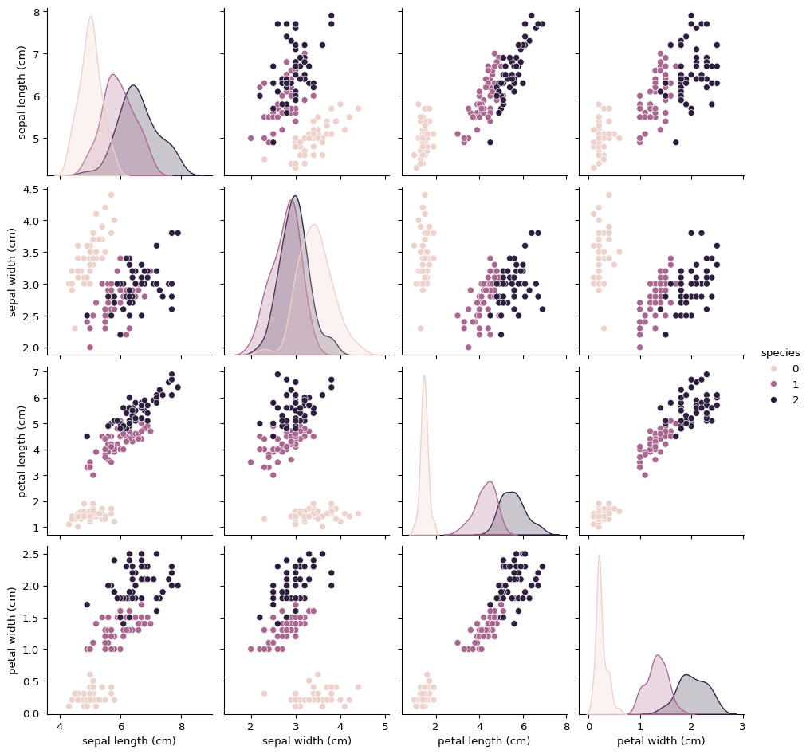

Every machine learning project starts with a clear understanding of the problem.
Example scenario:
You are working at an e-commerce company, and your goal is to predict product demand using historical sales data. Features may include:
Product category
Price
Seasonality
Customer demographics
This enables the company to optimize inventory and reduce stockouts.
Analogy: Think of your model as a weather forecast — not perfect, but helpful in making decisions ahead of time.
3.2 Get the Data
Acquiring and preparing the data is the first technical step. You may:
Query internal databases
Use APIs to fetch real-time data
Scrape websites
Merge multiple sources and ensure data consistency
3.2.1 Python Example
import numpy as np import pandas as pd
# 1. Define the Problem and Get the Datafrom sklearn.datasets import load_irisimport pandas as pd# Load the Iris datasetdata = load_iris()X = pd.DataFrame(data.data, columns=data.feature_names)y = pd.Series(data.target, name="species")# Display the first few rows of the DataFrameprint(X.head())
Analogy: This step is like reading a map before planning your route.
3.3.1 Python Example
# 3. Data Explorationimport seaborn as snsimport matplotlib.pyplot as plt# Visualize the feature relationships using a pairplotsns.pairplot(pd.concat([X, y], axis=1), hue='species')plt.show()

3.4 Feature Scaling and Normalization
Many algorithms are sensitive to the magnitude of features.
3.4.1 Common Methods
Min-Max Scaling (Normalization): Rescales features to a fixed range, typically [0, 1]
Standardization: Centers features around zero mean with unit variance
Analogy: Think of it like converting all ingredients to the same unit before cooking a recipe.
Analogy: A pipeline is like an assembly line — each step handles part of the process automatically.
3.7 Select and Train a Model
Select a model based on your data type and problem type.
Linear Regression: For continuous numeric targets
Decision Trees / Random Forests: For structured tabular data
Gradient Boosting (e.g., XGBoost, LightGBM): For high performance
Neural Networks: For complex/high-dimensional data
3.7.1 Training Example
# 5. Model Training (Logistic Regression as an example)from sklearn.linear_model import LogisticRegressionmodel = LogisticRegression(max_iter=200)model.fit(X_train_scaled, y_train)
LogisticRegression(max_iter=200)
In a Jupyter environment, please rerun this cell to show the HTML representation or trust the notebook. On GitHub, the HTML representation is unable to render, please try loading this page with nbviewer.org.
LogisticRegression(max_iter=200)
3.8 Fine-Tune Your Model
After training, tune the model to improve performance.
3.8.1 Common Techniques
Grid Search: Tries all combinations of parameters
Random Search: Samples random combinations
Cross-Validation: Ensures performance generalizes well
3.8.2 Example
# 6. Fine-Tuning (Optional)from sklearn.model_selection import GridSearchCV# Example of hyperparameter tuning using GridSearchCVparam_grid = {'C': [0.1, 1, 10], 'solver': ['liblinear', 'lbfgs']}grid_search = GridSearchCV(LogisticRegression(max_iter=200), param_grid, cv=5)grid_search.fit(X_train_scaled, y_train)# Best parameters and score after tuningprint("Best Parameters:", grid_search.best_params_)print("Best Accuracy:", grid_search.best_score_)
Best Parameters: {'C': 1, 'solver': 'lbfgs'}
Best Accuracy: 0.9428571428571428
3.9 Model Evaluation Metrics
Different tasks need different evaluation metrics.
Accuracy: Ratio of correct predictions (for balanced classification tasks)
Precision: Proportion of predicted positives that are correct
Recall: Proportion of actual positives that are correctly identified
F1 Score: Harmonic mean of precision and recall (useful for imbalanced classes)
Confusion Matrix: Table of true vs. predicted values
3.9.1 Python Example
# 7. Model Evaluation (Accuracy)from sklearn.metrics import accuracy_score, confusion_matrix, classification_report# Make predictions on the test sety_pred = model.predict(X_test_scaled)# Calculate accuracyaccuracy = accuracy_score(y_test, y_pred)print(f"Accuracy: {accuracy:.4f}")conf_matrix = confusion_matrix(y_test, y_pred)print("Confusion Matrix:")print(conf_matrix)print("Classification Report:")print(classification_report(y_test, y_pred))